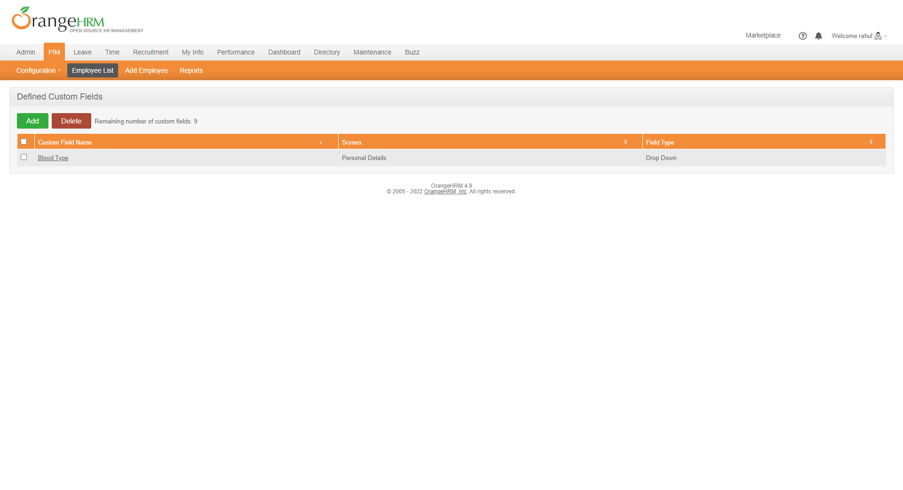
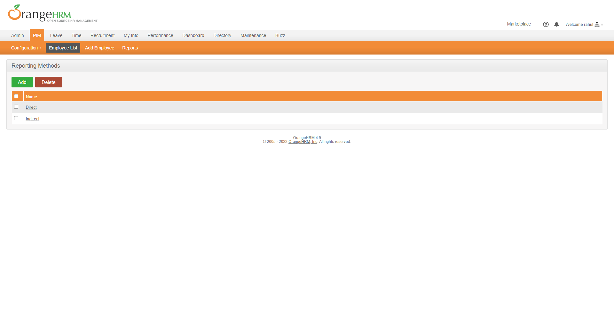
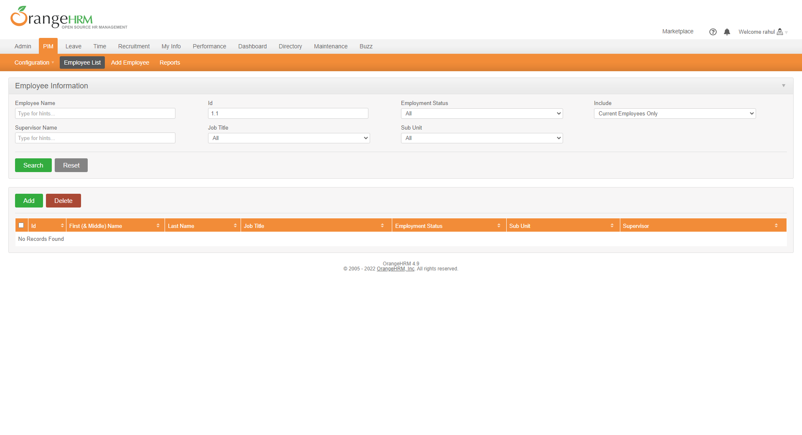
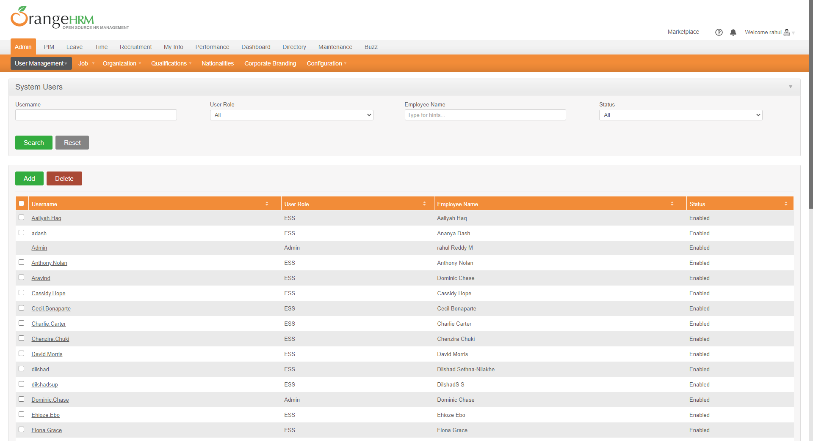
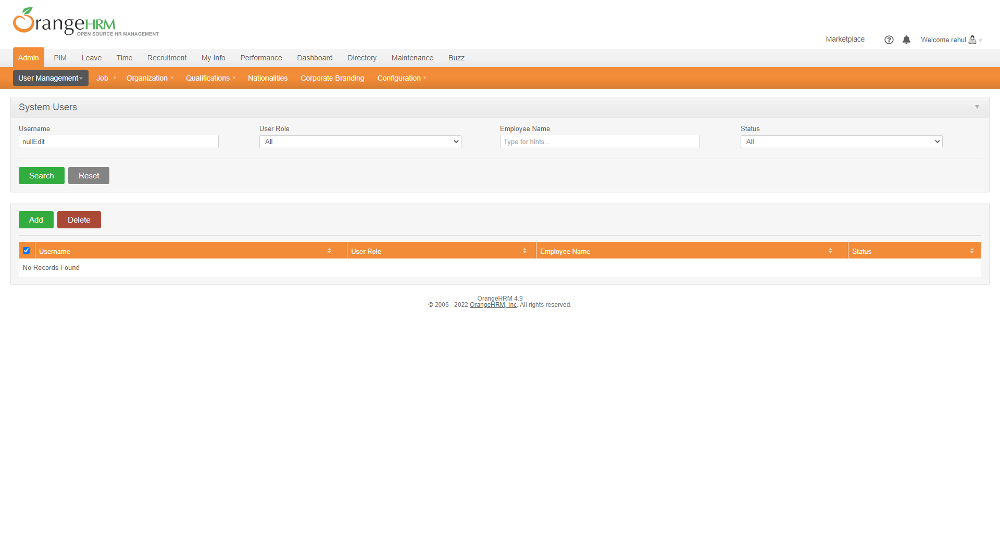
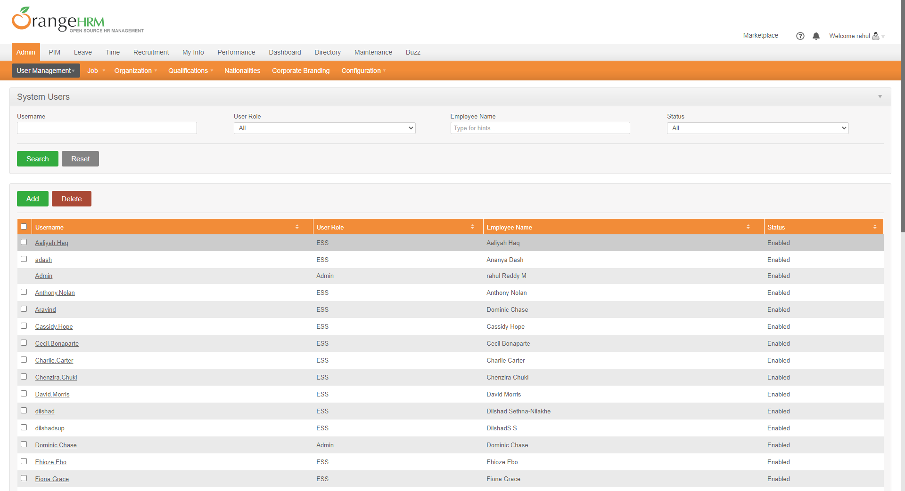

-
Login Action
6:05:13 PM / 00:00:09:809 Pass
Login Action
04.11.2022 6:05:13 PM 04.11.2022 6:05:23 PM 00:00:09:809 · #test-id=1Passvalidation message show when User forget to enter password in login pageGiven I launch application and on login pageWhen User only enter username but forget to enter passwordAnd User click submit buttonThen Message display Password cannot be empty on login page -
Custom form Action
6:05:13 PM / 00:00:34:581 Fail
Custom form Action
04.11.2022 6:05:13 PM 04.11.2022 6:05:47 PM 00:00:34:581 · #test-id=3FailEdit custom field SuccessfullyGiven I launch application and on login pageWhen User login with following credentials detailsAdmin admin123 And User click submit buttonAnd user hover on PIM to see all menu optionAnd Go to custom fieldGiven User is on custom field pageWhen Edit the data and save itcom.bddcucumberframework.stepDefinations.Hooks.screenshots(io.cucumber.java.Scenario)screenshot nameThen Data save successfully and message show Successfully SavedStep skippedFailDelete custom field record SuccessfullyGiven I launch application and on login pageWhen User login with following credentials detailsAdmin admin123 And User click submit buttonAnd user hover on PIM to see all menu optionAnd Go to custom fieldGiven User is on custom field pageWhen Select the a record and Delete itcom.bddcucumberframework.stepDefinations.Hooks.screenshots(io.cucumber.java.Scenario)screenshot nameThen successfully record deleted with message show "Successfully Deleted"Step skipped -
Reporting Method
6:05:13 PM / 00:00:34:089 Fail
Reporting Method
04.11.2022 6:05:13 PM 04.11.2022 6:05:47 PM 00:00:34:089 · #test-id=5FailDelete Reporting Method SuccessfullyGiven I launch application and on login pageWhen User login with following credentials detailsAdmin admin123 And User click submit buttonAnd user hover on PIM to see all menu optionAnd Go to Reporting Method pageGiven User is on reporting method pageWhen Select reporting record and delete itcom.bddcucumberframework.stepDefinations.Hooks.screenshots(io.cucumber.java.Scenario)screenshot nameThen successfully record deleted with message show "Successfully Deleted"Step skipped -
Add and Edit Employee
6:05:13 PM / 00:00:35:149 Fail
Add and Edit Employee
04.11.2022 6:05:13 PM 04.11.2022 6:05:48 PM 00:00:35:149 · #test-id=8FailDelete Employee Record successfullyGiven I launch application and on login pageWhen User login with following credentials detailsAdmin admin123 And User click submit buttonAnd User on PIM menuAnd User go to Edit Employee menuAnd User search employee by employee ID for DeleteGiven User On employee ListWhen User Delete the selected recordcom.bddcucumberframework.stepDefinations.Hooks.screenshots(io.cucumber.java.Scenario)screenshot nameThen Record Deleted SuccessfullyStep skippedFailCheck user Attached file successfully in employee personal sectionGiven I launch application and on login pageWhen User login with following credentials detailsAdmin admin123 And User click submit buttonAnd User on PIM menuAnd User go to Edit Employee menuAnd User search employee by employee IDcom.bddcucumberframework.stepDefinations.Hooks.screenshots(io.cucumber.java.Scenario)screenshot nameGiven User On personal pageStep skippedWhen User browse a file and upload itStep skippedThen file upload successfully with messageStep skippedFailCheck user upload profile image successfully in personal sectionGiven I launch application and on login pageWhen User login with following credentials detailsAdmin admin123 And User click submit buttonAnd User on PIM menuAnd User go to Edit Employee menuAnd User search employee by employee IDcom.bddcucumberframework.stepDefinations.Hooks.screenshots(io.cucumber.java.Scenario)screenshot nameGiven User On personal pageStep skippedWhen User upload profile pictureStep skippedThen profile picture upload successfullyStep skipped -
Add User Action
6:05:13 PM / 00:00:30:576 Fail
Add User Action
04.11.2022 6:05:13 PM 04.11.2022 6:05:43 PM 00:00:30:576 · #test-id=12FailEdit user record which is recently addedGiven I launch application and on login pageWhen User login with following credentials detailsAdmin admin123 And User click submit buttonAnd user go to system users section by click on Users menuGiven User is on system pageWhen I enter username and click on search buttoncom.bddcucumberframework.stepDefinations.Hooks.screenshots(io.cucumber.java.Scenario)screenshot nameAnd I click on appear recordStep skippedAnd I go to Edit user section and edit some informationStep skippedAnd save the record by click on Save ButtonStep skippedThen Record Updated and Successfully message showStep skippedFailDelete user record which is Edit recentlyGiven I launch application and on login pageWhen User login with following credentials detailsAdmin admin123 And User click submit buttonAnd user go to system users section by click on Users menuGiven User is on system pageWhen I enter username into system user page and click on search buttonAnd I select a record which need to be deleteAnd I cancel the popup for delete the recordcom.bddcucumberframework.stepDefinations.Hooks.screenshots(io.cucumber.java.Scenario)screenshot nameAnd I delete the record from tableStep skippedThen deleted record successfully message showStep skippedAnd Deleted record not foundStep skippedFailsearch a user which is added successfullyGiven I launch application and on login pageWhen User login with following credentials detailsAdmin admin123 And User click submit buttonAnd user go to system users section by click on Users menuGiven User is on system pageWhen I enter username and click on search buttoncom.bddcucumberframework.stepDefinations.Hooks.screenshots(io.cucumber.java.Scenario)screenshot nameThen added user show in the recordStep skipped
-
java.lang.IllegalArgumentException
2 tests
java.lang.IllegalArgumentException
2 failedStatus Timestamp TestName Fail 18:05:26 PM When I enter username and click on search button Add User Action.search a user which is added successfully.When I enter username and click on search buttonFail 18:05:26 PM When I enter username and click on search button Add User Action.Edit user record which is recently added.When I enter username and click on search button -
java.lang.AssertionError
1 tests
java.lang.AssertionError
1 failedStatus Timestamp TestName Fail 18:05:27 PM And I cancel the popup for delete the record Add User Action.Delete user record which is Edit recently.And I cancel the popup for delete the record -
org.openqa.selenium.ElementNotInteractableException
1 tests
org.openqa.selenium.ElementNotInteractableException
1 failedStatus Timestamp TestName Fail 18:05:27 PM When User Delete the selected record Add and Edit Employee.Delete Employee Record successfully.When User Delete the selected record -
org.openqa.selenium.NoSuchElementException
5 tests
org.openqa.selenium.NoSuchElementException
5 failedStatus Timestamp TestName Fail 18:05:26 PM When Select the a record and Delete it Custom form Action.Delete custom field record Successfully.When Select the a record and Delete itFail 18:05:26 PM When Select reporting record and delete it Reporting Method.Delete Reporting Method Successfully.When Select reporting record and delete itFail 18:05:26 PM When Edit the data and save it Custom form Action.Edit custom field Successfully.When Edit the data and save itFail 18:05:26 PM And User search employee by employee ID Add and Edit Employee.Check user Attached file successfully in employee personal section.And User search employee by employee IDFail 18:05:26 PM And User search employee by employee ID Add and Edit Employee.Check user upload profile image successfully in personal section.And User search employee by employee ID
Started
Apr 11, 2022 06:05:12 PM
Ended
Apr 11, 2022 06:05:48 PM
Features Passed
1
Features Failed
4
Features
Scenarios
Steps
Timeline